---

layout: default
title: Artists
lang: it

---

 <div id="pagina">
 <div class="row no-background">
    <h2><strong>Artisti</strong></h2>
    <p>AudioStation &egrave; utilizzata con successo da musicisti solisti, band, orchestre e ingegneri del suono, dal vivo e in studio, per coprire un ampio range di necessit&agrave;.</p>
    <p>Tra gli utilizzatori non mancano artisti di successo:</p>
    </div>

    <div class="row no-background">
    
    <h2 class="text-center">Christian Rigano</h2>
    <div class="col-sm-3">
      <strong>Christian Rigano</strong> nasce a Gorizia l'11 aprile 1975. Inizia a suonare a dieci anni affascinato dai sintetizzatori e da gruppi come Depeche Mode e Duran Duran. <br>
I primi palchi importanti arrivano con Elisa nel 1997 durante il tour "Pipes and Flowers", con lei registra i singoli "Cure me", "Almeno tu nell'universo", "Swan" e gli album "Lotus" e "L'Anima Vola".<br>
Nel 2001 inizia la collaborazione con Tiziano Ferro con il quale suona in tutti i tour dal 2002 al 2012 e registra gli album: "111", "Nessuno è Solo" ,"Alla Mia Età", "L'Amore è Una Cosa Semplice" e gli inediti contenuti in "TZN the best of Tiziano Ferro".</div>
    
    <div class="col-md-6">
      <p>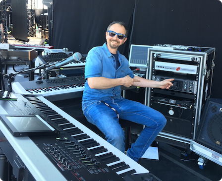</p>
    </div>
    
    <div class="col-sm-3">
      <p>L'incontro con Lorenzo Jovanotti avviene nel 2005, con lui suona in molti festival europei, negli Stati Uniti, Canada, Brasile, Argentina e nei tour italiani:  "Buon Sangue", "Safari", "Ora", "Backup/Lorenzo negi Stadi 2013" e "Lorenzo negli Stadi 2015".<br> 
Con Lorenzo è coautore dei brani: "Sabato", "L'Estate Addosso", "Musica".<br>
In studio ha lavorato con molti artisti: Jovanotti, Elisa, Tiziano Ferro, Giorgia, Eros Ramazzotti, Luca Carboni, Max Pezzali, Giusy Ferreri, Nina Zilli, Adriano Celentano, Biagio Antonacci, Patty Pravo, Francesca Michielin, Marco Mengoni, Loredana Errore, Irene Fornaciari...<p>
    </div>
  
    <!-- Christian: citazione -->
    
    <blockquote>
      <p>Ho scelto <strong>AudioStation</strong> perchè è molto potente, veloce e facile da usare e mi permette di usare dal vivo tutti i Virtual Instruments e Plug-Ins che uso abitualmente in studio</p>
      <div class="signature">Christian Rigano, giugno 2016</div>
    </blockquote>

    <!-- christian: immagini setup  -->
    <div class="col-md-6">
      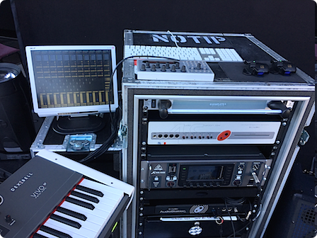
    </div>
    
    <div class="col-md-6">
      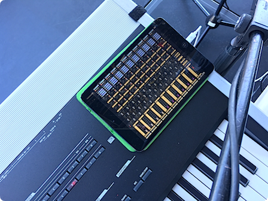
    </div>

    <!--Christian: Video  -->
    <div class="col-md-6 text-center">
      <h3>Christian presenta AudioStation</h3>
      <a title="Christian Rigano introduces AudioStation" class="youtube-fancy" data-fancybox-type="fancybox.iframe" href="http://www.youtube.com/embed/Bl2uF4MRhh8?autoplay=1" >
      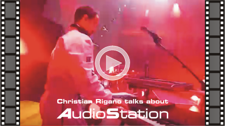</a>
    </div>
    
    <div class="col-md-6 text-center">
      <h3>Lorenzo racconta AudioStation</h3>
      <a title="Lorenzo talks about AudioStation" class="youtube-fancy" data-fancybox-type="fancybox.iframe" href="http://www.youtube.com/embed/nCZBPo9BLw8?start=345&autoplay=1" >
      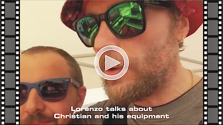</a>
    </div>

  </div><!-- fine paragrafo christian -->

  
  <!-- Ever4right -->
  <div class="row"> 
     <p>&nbsp;</p>
  
    
     <p>&nbsp;</p>
    <div class="col-sm-3">Gli Ever Forthright sono un gruppo musicale progressive metal, che nasce nasce da uno dei posti dove la musica &egrave; pi&ugrave; ricca di contaminazioni: New York City.<br>
      La fusione eseguita con maestria di jazz contemporaneo, progressive metal, hip-hop, electronica e altri stili musicali per creare ambientazioni sonore uniche &egrave; uno dei motivi per cui gli Ever Forthright sono diventati rapidamente molto noti come architetti della modern music.<br>
      Parecchi dei membri della band sono diplomati o si sono formati nelle migliori e pi&ugrave; blasonate scuole di musica nel mondo.</div>
    
    <div class="col-md-6">
      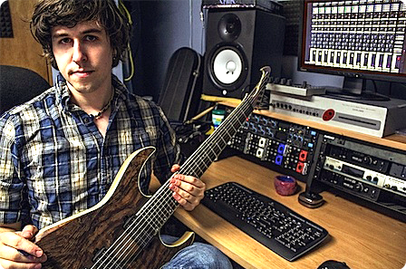
    </div>
    
    <div class="col-sm-3">
      <p>Ever Forthright &egrave; una band composta da 6 elementi che contemporaneamente usano AudioStation nei loro live.<br>
        L'apparecchio elebora in tempo reale con plugins VST chitarre, basso, tastiere e  trigger della grancassa della batteria.<br>
        Dal vivo i suoni vengono vengono cambiati automaticamente via sequencer in AudioStation, cos&igrave; i musicisti possono concentrarsi sulla performance.<br>
        E grazie al mixer digitale di AudioStation e alle uscite assegnabili, i musicisti gestiscono anche gli in-ear monitors.</p>
    </div>
    </div>
    <div class="row no-background">
    <!-- Ever4right: secondo capoverso -->
    
    <p>
    Poich&eacute; tutti gli strumenti vengono elaborati da AudioStation, anche la registrazione del concerto con qualit&agrave; da studio diventa una cosa semplice quanto premere un pulsante dedicato, cos&igrave; come riascoltarla appena terminato il concerto; le registrazioni possono essere anche usate anche come tracce audio per video o DVD dei concerti Live.<br>
      Grazie a questo setup il materiale da trasportare si riduce ad un solo flight case oltre agli strumenti, niente amplificatori o altro, la band viaggia senza usare necessariamente un furgone.</p>
      <!-- Ever4right: quote -->
    <blockquote>
    <p><strong>AudioStation</strong> è tutto ci&ograve; di cui una band ha bisogno per le performance dal vivo; &egrave; sufficiente una presa di corrente e il montaggio è rapidissimo.</p>
    <div class="signature">Ever Forthright, gennaio 2014</div>
    </blockquote>

    <!-- ever4right: video -->
    <h3 style="text-align:center;">Come gli Ever Forthright usano AudioStation </h3>
    <a title="Come gli Ever Forthright usano AudioStation" class="youtube-fancy" data-fancybox-type="fancybox.iframe" href="http://www.youtube.com/embed/8mXUoWdwD7I?autoplay=1" >
    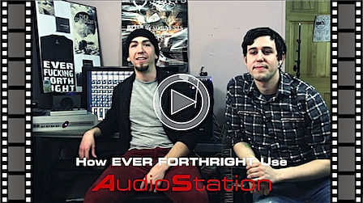
    </a>
    
  </div>
  <!-- Ever4: end -->

  <!-- Boosta -->
  <div class="row"> 
     <p>&nbsp;</p>
    
    <p>Tra i vari artisti spicca il nome di un musicista particolarmente importante… BOOSTA, istrionico ed eclettico tastierista dei SUBSONICA, la pi&ugrave; importante band electro-rock italiana, che per creare e riprodurre dal vivo articolate e ricercatissime sonorit&agrave; dal 2008 ha scelto AudioStation!</p>
   <div class="col-sm-3">
    <p class="didascalia">prima versione</p>
    
    
<a href="../images/zoom/arts_oldback-stage_zoom.jpeg" data-rel="lightcase">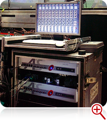</a>
    </div>
    
    <div class="col-sm-3">
     <p class="didascalia">versione 2011</p>
     
     
<a href="../images/zoom/arts_newback-stage_zoom.jpeg" data-rel="lightcase">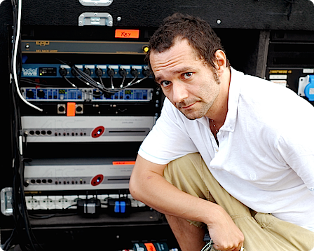</a>
    </div>
    
    <div class="col-sm-3">
     <p class="didascalia">senza monitor</p>
     
     
<a href="../images/zoom/arts_oldstage_zoom.jpeg" data-rel="lightcase">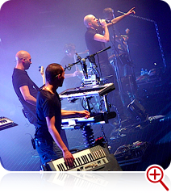</a>
    </div>
    
    <div class="col-sm-3">
     <p class="didascalia">con monitor</p>
     
     
<a href="../images/zoom/arts_newstage_zoom.jpeg" data-rel="lightcase">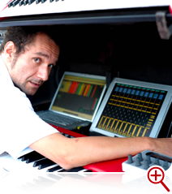</a>
    </div>
    <!-- Boosta: quote -->
    
    <blockquote>
    <p><strong>AudioStation</strong> mi ha semplificato il live. E' facile da programmare, &egrave; affidabile, occupa poco spazio e ha un&rsquo;interfaccia intuitiva. Mi d&agrave; la possibilit&agrave; di avere velocemente sulla mia tastiera tutti i suoni di cui ho bisogno, dagli strings pi&ugrave; sofisticati al mio ultimo synth, e con il RemoteController in dotazione posso gestire i plugin e i miei Virtual Instrument preferiti in tempo reale, dandomi cos&igrave; pi&ugrave; libert&agrave; e creativa durante il concerto.</p>
<div class="signature">Boosta, maggio 2008</div>
    </blockquote>

<div class="row no-background text-center">
    <!-- Boosta : video -->
<h3 >Boosta parla di AudioStation...</h3>
<a href="../video/Boosta-interview-iPhone.mov?width=480&height=270" data-rel="lightcase" title="Boosta Interview on AudioStation">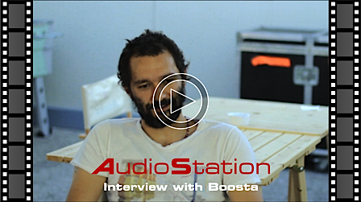</a>
   </div> <!-- Boosta: fine paragrafo -->

 <!-- BBR: inizio -->
 <div class="row">
     <p>&nbsp;</p>
   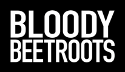
   <div class="col-sm-3"><p>Bloody Beetroots &eacute; Sir Bob Cornelius Rifo, il produttore italiano nato lo stesso anno del punk rock.</p>
<p>Il suo EP Cornelius &eacute; stato nei Top 100 International iTunes download.</p>
<p>La sua band "electro-punk", Bloody Beetroots Death Crew 77,
con il batterista Battle e Tommy Tea ai controller, &eacute; in grado di trasformare un concerto per migliaia di appassionati in un raduno politico / empowerment seminar.</p></div>
   
   <div class="col-md-6">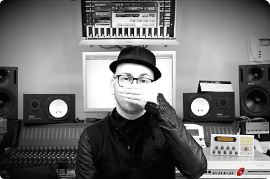</div>
   
   <div class="col-sm-3"><p>Le sue produzioni possono essere ascoltate anche in alcuni episodi della famosissima serie televisiva CSI Miami e in Skin, Rampart, FIFA 09, NBA 2K9 e Need For Speed.</p>
<p>Come remixer ha lavorato con Timbaland, Britney Spears, The Killers e molti altri.</p>
<p>Assieme a Dennis Lyxzen, leader della band punk Refused, &eacute; anche il fondatore del movimento socio-culturale denominato &quot;Church of Noise&quot;.</p></div>
</div>

<!-- BBR: quote -->
<blockquote>
<p>
  <strong>AudioStation</strong> &eacute; uno dei pi&uacute; versatili apparecchi per il live fino ad ora realizzati. Lo uso da un anno per riprodurre sul palco tutti i suoni che utilizzo abitualmente in studio&rdquo;.</p>
<div class="signature">Sir Bob Cornelius Rifo, Novembre 2011</div>
</blockquote>
    <div class="row no-background text-center">

<!-- BBR: fotona -->
<h3>The Bloody Beetroots Live with AudioStation at Rock am Ring 2013</h3>
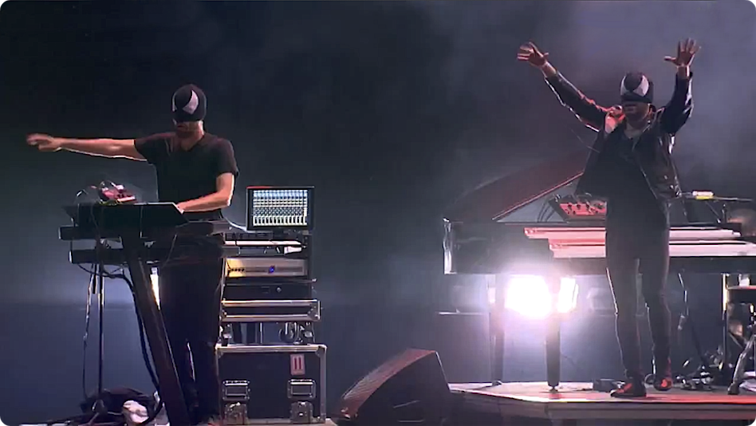
 </div>
   
  <!-- end pagina--></div>
